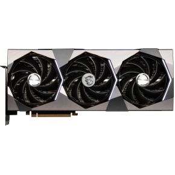
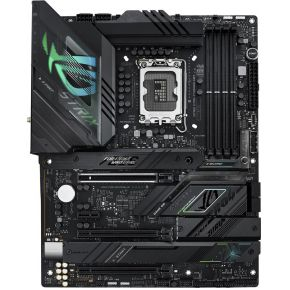

Uitgelichte Producten
-

MSI GeForce RTX 4090 SUPRIM X 24G Videokaart
Ervaar gaming op een nieuw niveau met de krachtige NVIDIA GeForce RTX 4090. Deze grafische kaart levert verbluffende grafische prestaties en ondersteunt real-time ray tracing voor een meeslepende game-ervaring.
Bekijk details -

Processor - Intel Core i9 12900K
De Intel Core i9 12900K biedt ongeëvenaarde multitasking-prestaties en snelheden. Ideaal voor gamers, content creators en professionals die hoge prestaties eisen.
Bekijk details -

Moederbord - ASUS ROG Strix Z-790 Gaming-F WIFI
Het ASUS ROG Strix Z-790 Gaming-F WIFI moederbord biedt hoogwaardige prestaties en betrouwbaarheid voor gamers. Uitgerust met PCIe 5.0 voor snellere gegevensoverdracht en RGB-verlichting voor een stijlvolle gaming-setup.
Bekijk details